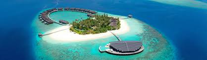
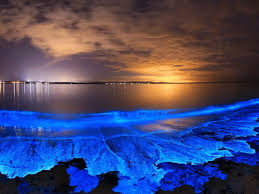
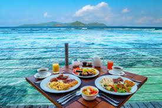

Top Attractions


Malé: Malé is the colorful capital city of the
Maldives and one of the smallest capitals in the world. It is famous
for its busy streets, local markets, beautiful mosques, and cultural
attractions. Visitors can explore the fish market, local cafés, parks,
and the Islamic Centre to experience the everyday lifestyle of
Maldivian people.
Banana Reef: Banana Reef is one of the most famous
diving spots in the Maldives. It is known for its banana-shaped coral
formation, vibrant marine life, caves, and colorful coral gardens.
Divers and snorkelers can see sharks, sea turtles, manta rays, and
hundreds of tropical fish species in its crystal-clear waters.
Maafushi Island: Maafushi is a popular local island
that offers beautiful beaches and affordable tourism experiences.
Travelers can enjoy water sports, snorkeling, scuba diving, and island
hopping while experiencing local Maldivian culture and hospitality at
budget-friendly guesthouses.
Vaadhoo Island: Vaadhoo Island is famous for the
magical “Sea of Stars” phenomenon, where the beach glows at night due
to bioluminescent plankton in the water. The glowing blue waves create
a dreamlike view that attracts photographers and tourists from around
the world.
Hulhumalé Island: Hulhumalé is a modern artificial
island near the airport and capital city. It is known for its clean
beaches, relaxing atmosphere, cycling paths, cafés, and modern
infrastructure. Many visitors stay here before traveling to resort
islands.
Ari Atoll: Ari Atoll is one of the best places in the
Maldives for luxury resorts and underwater adventures. It is
especially famous for whale shark sightings, diving experiences, and
romantic overwater villas surrounded by turquoise lagoons.
Sun Island Resort: Sun Island Resort is a luxury
resort destination known for its long beaches, tropical gardens, water
villas, and relaxing spa experiences. Visitors enjoy activities such
as kayaking, jet skiing, snorkeling, and sunset cruises.
Addu Atoll: Addu Atoll is located in the southern
part of the Maldives and is famous for its peaceful islands,
historical sites, diving spots, and natural beauty. It offers a less
crowded and more traditional Maldivian experience compared to the
luxury resort areas.
National Museum: Located in Malé, the National Museum
preserves the rich history and culture of the Maldives. It displays
ancient artifacts, royal antiques, traditional clothing, and
historical objects from the country’s past.
Overwater Resorts: The Maldives is world-famous for
its luxurious overwater resorts built above clear lagoons. These
resorts offer private pools, ocean views, underwater restaurants, and
direct access to the sea, making them one of the biggest attractions
for honeymooners and tourists.
Food in Maldives

Mas Huni and seafood dishes are an important part of the culture and
daily life in the Maldives. Maldivian cuisine is mainly influenced by
Indian, Sri Lankan, and Arabic cooking styles, but it also has its own
unique flavors and traditional recipes. Since the Maldives is surrounded
by the Indian Ocean, fish is the most commonly used ingredient in many
dishes, especially tuna. Coconut, rice, and spices are also essential
ingredients in Maldivian cooking, giving the food a rich, spicy, and
tropical taste. One of the most popular traditional breakfast dishes is
Mas Huni, which is prepared using shredded tuna, grated coconut, onions,
and chili mixed together and usually eaten with flatbread called roshi.
Another famous dish is Garudhiya, a simple but flavorful fish soup
served with rice, lime, chili, and onions. Maldivian cuisine is known
for its spicy curries made with fish, chicken, or vegetables, often
cooked with coconut milk and local spices to create a delicious aroma
and taste. Street foods and snacks are also very popular in the
Maldives, including samosas, fish cutlets, bajiya, and sweet
coconut-filled pastries that are commonly enjoyed with tea during
evening gatherings. In luxury resorts, tourists can experience a wide
variety of international cuisines along with authentic Maldivian dishes
prepared using fresh seafood and tropical ingredients. Grilled fish,
lobster, prawns, octopus, and crab are commonly served in beachside
restaurants with beautiful ocean views. Tropical fruits such as mangoes,
papayas, watermelons, and coconuts are widely available and often used
in desserts and refreshing drinks. Traditional desserts in the Maldives
are usually made using coconut, rice, and sweet syrups, giving them a
rich and creamy flavor. Food in the Maldives not only represents the
country’s island lifestyle and fishing traditions but also provides
visitors with a unique culinary experience filled with fresh
ingredients, aromatic spices, and unforgettable flavors.